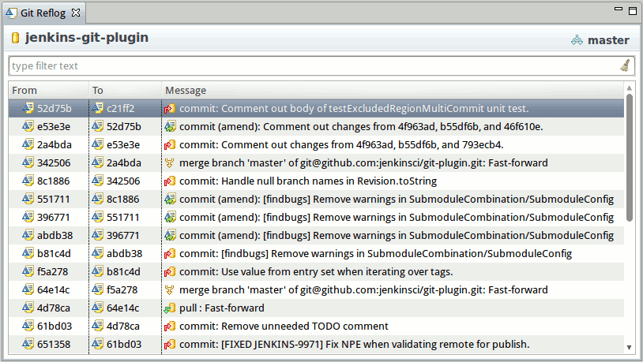
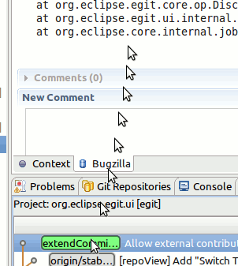
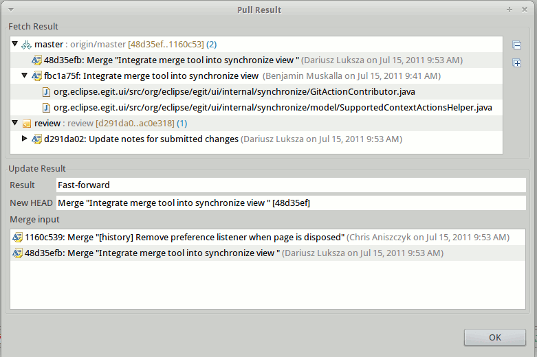
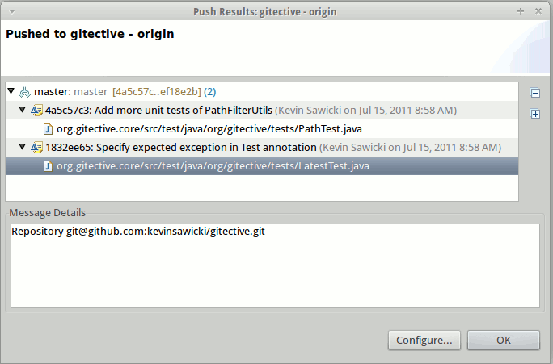
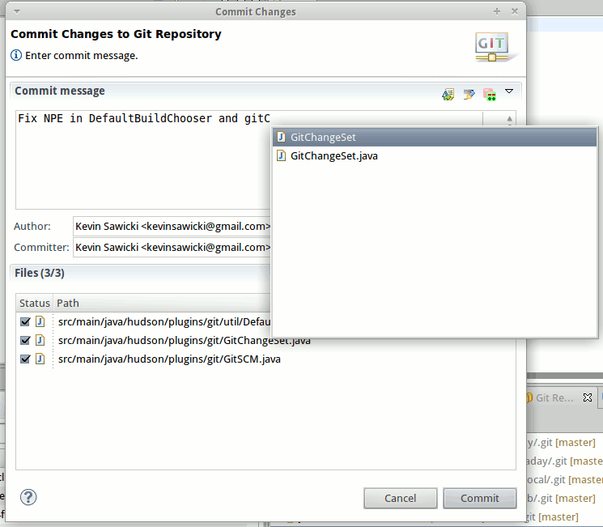
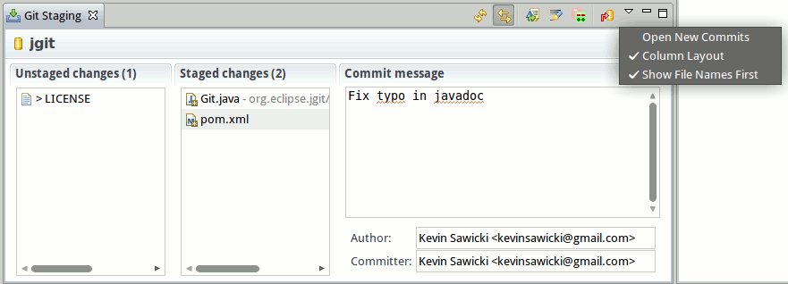
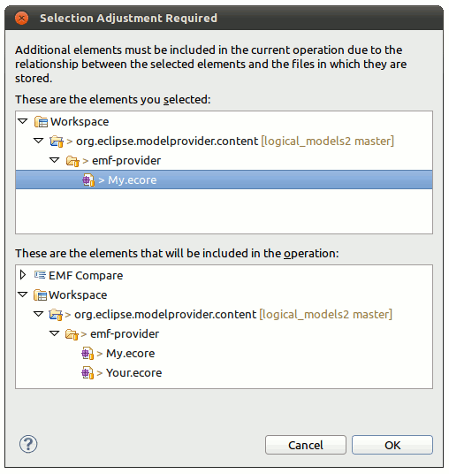
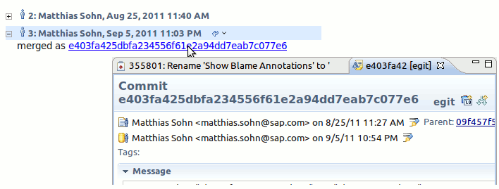

| EGit 1.1 New and Noteworthy |
|
|

|
|
|
New Actions |
New Features
New Reflog View
- Shows the Git reflog for a selected repository
- Supports showing the reflog for a specific branch by selecting the hyperlink ref name in the top right of the view
- Supports searching and filtering
- Double-clicking a reflog entry opens the corresponding
To commit

Allow dragging of commits from History view
You're now able to Drag and drop commits either onto a Mylyn Task or into a folder on your harddisk. In both cases, EGit will automatically create a patch for you to attach it on the bug or to create a patchfile on your harddisk.

New preference to ignore whitespace changes in blame annotations
History View always displays HEAD and other additional refs
- Commits and modified files displayed in fetch, push, and pull and push result dialogs
- Commit details such as author and date are now displayed for merge results
- Icons displayed for different ref update types (new tag, new branch, etc.)
- Push result messages now support hyperlinks


Commit Dialog Improvements
- Support for commit ID hyperlinks
- Content assist for file names shown in
Files section

Staging View
- New column layout preference that supports showing the
Unstaged Changes and
Staged Changes sections side by side
- New preference for showing the file names first followed by the directory that the files are located in

New Features in Synchronize View
- Synchronize filtered on folder
- drag and drop staging / unstaging in Git Changeset Model (
demonstration on youtube)
- new "Fetch Changes" checkbox in synchronize wizard
- Performance improvements
- "Synchronize Wizard" allow select additional refs like FETCH_HEAD
- "Synchronize With..." menu item moved into "Advanced" section
Team Project Set Support
It's now possible to export and import Git projects with team project set files (.psf). This enables easier workspace setup, especially with many repositories and/or with different branches. How it works:
- Select the projects you want to export
- Right click on the selection and chose
Export
- Select
Team Project Set
- Fill in the details such as where the
.psf file should be saved and finish the wizard
This creates a file with all the information that is necessary for Eclipse to reconstruct the project setup. It contains the URLs of the Git repositories, the branch to checkout, and the paths to the projects. Creating a new workspace is as easy as:
- Go to
File ->
Import
- Select
Team Project Set
- Select the
.psf file
Eclipse will clone the repositories into the workspace location, check out the right branches and import the projects, ready for creating new commits and pushing.
Logical Model Support
In case you're working with files that are supported by a Logical Model Provider (eg. EMF Compare for .ecore, or other commercial modeling tools), EGit now detects these cases during staging, replacing and commiting changes and will help you to choose the right set of files to work on.

For some background information on Logical Models, see this blog post:
What the heck are Logical Models
Navigating from tasks to commits
With the Mylyn/EGit bridge installed, you're now able to see commit ids in tasks (eg. Bugzilla) hyperlinked. Once clicked, the corresponding commit will open up in the Commit Editor.

|
|
|
|
|
New Actions |